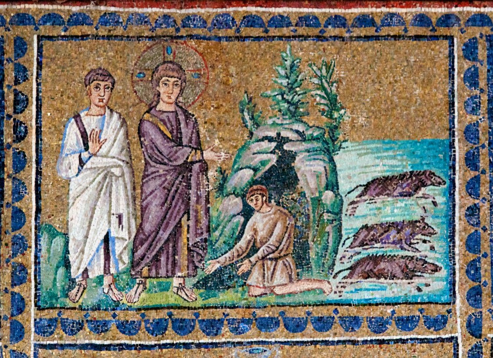
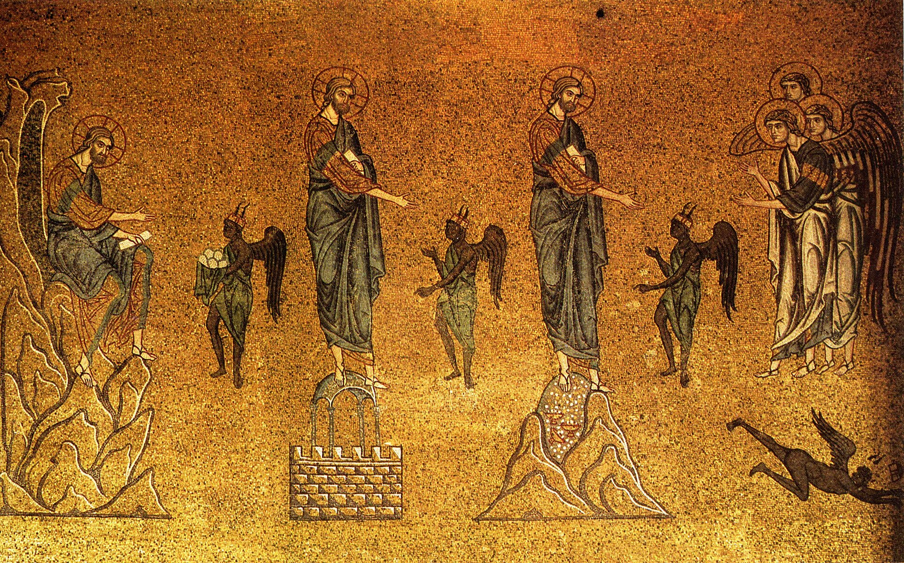

El Nuevo Testamento tiene fuego, juicio y un lago de fuego. Lo que no tiene es un infierno descrito, ni demonios que torturen a nadie.
En el Antiguo Testamento casi no hay posesión demoníaca. No hay exorcistas, no hay espíritus que hablen por la boca de nadie, no hay fórmulas para expulsarlos. En los evangelios, en cambio, los demonios están en todas partes: en una sinagoga de Cafarnaún, en un cementerio de la Decápolis, en el cuerpo de un niño epiléptico, en una mujer encorvada. Entre los dos corpus hay unos pocos siglos, y en ese hueco ha ocurrido algo.
Lo que ha ocurrido es lo que contaron las dos primeras entregas: el Libro de los Vigilantes proporcionó una etiología —los demonios son los espíritus de los Gigantes muertos— y el judaísmo del Segundo Templo tardío desarrolló, en Jubileos, en Tobías y en los textos de Qumrán, una demonología completa. Los evangelios presuponen ese marco y no lo explican, porque para sus lectores no hacía falta explicarlo.
Lo primero que llama la atención al inventariar el vocabulario es que no hay un nombre, sino un montón, y que vienen de sitios distintos.
Satanás es la transliteración del semítico satán, «adversario», y en el Nuevo Testamento ya funciona como nombre propio: se ha completado el viaje del cargo a la persona. Diablo, diábolos, es la palabra con la que la Septuaginta había traducido ha-satán en Job y en Zacarías; de ahí llega a las lenguas romances y de ahí a nuestro «diablo». Beliar, en 2 Corintios 6:15, es la forma griega de Belial y una conexión directa con el vocabulario de Qumrán: una sola aparición, y suficiente para atar los dos mundos.
Y luego están los títulos, cada uno con su cosmología detrás. «El príncipe de este mundo» es exclusivo del cuarto evangelio. «El príncipe de la potestad del aire», en Efesios 2:2, presupone un universo de esferas donde el aire sublunar es dominio demoníaco. «El dios de este siglo», en 2 Corintios 4:4, es casi una provocación. «El maligno», «el tentador».
Nada de esto es un sistema. Es un depósito de expresiones de procedencias distintas que la tradición posterior organizará en una jerarquía que los textos no tienen.

El caso más instructivo es Beelzebul, porque en cuatro sílabas hay tres capas de historia.
El trasfondo está en 2 Reyes 1, donde el rey Ocozías consulta a baʿal zəbûb, «Baal de las moscas», dios de la ciudad filistea de Ecrón. Y la explicación más aceptada de ese nombre ridículo es que se trata de una deformación polémica deliberada: el título original habría sido baʿal zəbul, «Baal el príncipe» o «Baal de la morada celestial» —está atestiguado en ugarítico como «príncipe, señor de la tierra»—, y los escribas israelitas cambiaron zəbul, «príncipe», por zəbûb, «mosca», para convertir a un dios rival en el señor de los insectos. Es una reconstrucción, pero es buena.
Y tiene una consecuencia elegante: la forma griega de los evangelios, Beelzeboúl, conservaría entonces el nombre original, no la burla. La forma «Beelzebub», con la -b final, no viene del griego: viene de la Vulgata y de la Peshitta siríaca, y muchas traducciones modernas la arrastran por inercia latina.
Falta el dato más importante, y es de bulto. En la controversia de Beelzebul los evangelios lo llaman «príncipe de los demonios» y el propio texto lo equipara a Satanás: es el mismo, no su lugarteniente. La jerarquía infernal en la que Belcebú es el segundo de a bordo es una construcción medieval.
Sobre la actividad del Jesús histórico hay pocas cosas que la investigación considere tan firmes como ésta: que fue conocido como exorcista. Es más sólido que casi cualquier otro elemento de su biografía pública.
La razón es metodológica y conviene entenderla, porque explica cómo se decide este tipo de cosas. Hay atestación múltiple en fuentes y formas independientes —Marcos, la fuente Q, los sumarios de actividad, las controversias—, y hay tradiciones que la Iglesia posterior no tenía ningún interés en inventar. Cuando un dato aparece en varias corrientes que no se copian entre sí, y además resulta incómodo, la probabilidad de que sea invención baja mucho.
El dicho más citado es el de Lucas 11:20: «si por el dedo de Dios echo yo fuera los demonios, entonces el reino de Dios ha llegado a vosotros». Lo que hace es vincular el exorcismo con la escatología: en la lógica del Jesús histórico, cada expulsión es una escaramuza en el desmantelamiento del dominio de Satán. No son curaciones sueltas, son señales de que algo está cambiando de manos.
Y hay un matiz que casi nunca se da: el Evangelio de Juan no contiene ni un solo exorcismo. Ninguno. Es un dato importante sobre la construcción literaria de la figura, y una buena vacuna contra la idea de un «Jesús exorcista» uniforme en todo el Nuevo Testamento. Lo que hay son retratos distintos con intereses distintos.
Que Jesús fue conocido como exorcista es uno de los puntos más firmes de la investigación sobre el Jesús histórico, y decirlo no compromete a nada sobre la naturaleza de lo que ocurría en esos episodios: es un dato sobre cómo se lo conocía y qué hacía, no sobre metafísica. Lo que sí excede la evidencia es dar el paso siguiente y reconstruir su psicología demonológica —qué creía exactamente sobre Satán, cómo se veía a sí mismo en ese combate—. Los textos permiten establecer la práctica y su marco escatológico. No permiten entrar en su cabeza.

Y aquí llega la parte que suele desconcertar más, porque afecta a una imagen que parece inseparable del cristianismo.
El Nuevo Testamento tiene fuego. Tiene juicio. Tiene un lago de fuego y una Gehenna que aparece doce veces. Lo que no tiene es un infierno descrito: no hay topografía, no hay círculos, no hay instrumentos, no hay jerarquía punitiva, y no hay demonios que torturen a nadie.
Ese último punto es el decisivo, y está en la letra de los dos textos que más se citan. En Mateo 25:41 el fuego eterno está preparado para el diablo y sus ángeles: son los destinatarios del castigo. Y en Apocalipsis 20:10 el diablo es arrojado al lago de fuego. En el Nuevo Testamento el diablo no es el verdugo del infierno. Es uno de los condenados.
Hay otro problema, más técnico y no menos importante: el vocabulario no está armonizado. Hádes es el mundo de los muertos, géenna pertenece al juicio escatológico, tártaros es una prisión de ángeles, el abismo es otra cosa y el lago de fuego es el destino final apocalíptico. Cinco términos de cinco procedencias, usados por autores distintos con intenciones distintas. Fundirlos en un solo lugar con una sola geografía es obra de la tradición posterior.
La lista de lo que casi cualquiera dibujaría si le piden un infierno. Cada elemento con su dictamen y, lo más importante, con su procedencia: porque decir que algo no está en el Nuevo Testamento no explica nada si no se dice de dónde vino.
De dos libros que no entraron en el canon. El Apocalipsis de Pedro, del siglo II, y el Apocalipsis de Pablo —la Visio Pauli—, de los siglos III y IV, son recorridos guiados por el más allá, y en ellos sí hay lo que el Nuevo Testamento no tiene: castigos detallados, especializados según el pecado, ejecutados por ángeles y demonios verdugos, con una lógica de correspondencia entre la culpa y la pena.
Ésa es la fuente de la que bebe la imaginación medieval, y de ahí, por una línea que se puede seguir, llega hasta Dante. El infierno que casi todo el mundo tiene en la cabeza es un producto de la literatura apócrifa y de la poesía, no del canon.
Fuego, juicio, la Gehenna doce veces, un lago de fuego, el Tártaro como prisión de ángeles y una parábola con tormentos y sed. Ninguna descripción del lugar.
Un tour guiado por el más allá, con castigos concretos y especializados por pecado. Aquí empieza el infierno amueblado, y es un texto que no entró en el canon.
La Visio Pauli fija el género y añade los verdugos. De aquí sale casi toda la iconografía infernal medieval.
No inventa el infierno detallado: lo hereda de los apocalipsis apócrifos y lo convierte en arquitectura moral, con el contrapasso como principio de organización.
Queda entonces un cuadro asimétrico. En el terreno del adversario, el Nuevo Testamento es rico y desordenado: nombres de varias procedencias, títulos con cosmologías distintas, un Beelzebul que era un dios filisteo con el nombre deformado. En el terreno del castigo, en cambio, es sorprendentemente escueto: fuego, juicio, y ninguna descripción.
Lo que falta por explicar es la cara. Después de cinco entregas no ha aparecido, en ningún texto, una sola descripción del aspecto físico del diablo —y no va a aparecer, porque no existe. La última entrega trata precisamente de eso: de cómo se le fabricó un cuerpo, pieza por pieza, durante mil quinientos años.
Pieza interactiva de la serieEn el grafo, la línea que va del Libro de los Vigilantes a los evangelios es continua: la demonología del Nuevo Testamento presupone ese marco, y la carta de Judas cita a Enoc por su nombre. La que va del Tratado de los Dos Espíritus es discontinua.
Abrir el grafo →Es dato firme que la Biblia hebrea prácticamente no tiene posesión demoníaca ni exorcismo, y que el marco demonológico de los evangelios es el del judaísmo del Segundo Templo tardío, con la etiología enóquica de 1 Enoc 15:8-16:1 como trasfondo. Lo son las referencias del vocabulario: Beliar en 2 Corintios 6:15, «el príncipe de este mundo» sólo en el cuarto evangelio, «el príncipe de la potestad del aire» en Efesios 2:2. Lo es que en la controversia de Beelzebul el texto equipara a Beelzebul con Satanás, y que la forma griega es Beelzeboúl, siendo la -b final de la Vulgata y la Peshitta. Lo es que Juan no contiene ningún exorcismo. Y lo es el reparto del vocabulario infernal en cinco términos no armonizados, así como el hecho de que en Mateo 25:41 y Apocalipsis 20:10 el diablo sea el condenado y no el verdugo.
Debate abierto: la reconstrucción de baʿal zəbul como título original deformado en baʿal zəbûb es la explicación más aceptada, pero sigue siendo una reconstrucción. La identidad mutua de las figuras demoníacas del Segundo Templo —Belial, Mastema, Melki-reshaʿ, el Ángel de la Oscuridad— es probable y no demostrada. Y en el terreno del Jesús histórico, la interpretación escatológica de Lucas 11:20 es la mayoritaria, no la única. Este artículo no da cifras de apariciones que no haya podido comprobar, y no reconstruye estados mentales de ningún personaje.
Describir de dónde viene el infierno amueblado no es negar que una tradición pueda creer en un juicio o en una vida después de la muerte; son cuestiones distintas y este artículo no entra en la segunda. Lo que hace es separar dos capas que llevan mil quinientos años pegadas: lo que dicen los textos del canon y lo que añadieron la literatura apócrifa, la predicación y la poesía. La imagen popular del infierno es una obra colectiva extraordinaria, y saber quién puso cada pieza no le quita mérito a ninguno.